Unofficial - F5 Certification Exam Prep Material > Symposium 2026 - BIG-IP Administrator: Source | Edit on
Lab 1: The Basics (Networking, Pools and Virtual Servers)
In this lab we will access the Management Graphical User Interface (GUI). We will then create the VLANs, and assign self IP addresses to our VLAN. As mentioned during our lecture portion, BIG-IPs may be put in-line or one-armed depending on your customer’s requirements and topology.
- Log on to the bigip01 TMUI (GUI) Interface:
- UDF - Under Components, select the Access drop-down and then TMUI
Creating VLANs
First, you will need to log into bigip01. You will create two untagged VLANs, one client-side VLAN (client_vlan) and one server-side VLAN (server_vlan) for the devices in your network.
- From the sidebar select Network > VLANs then select Create

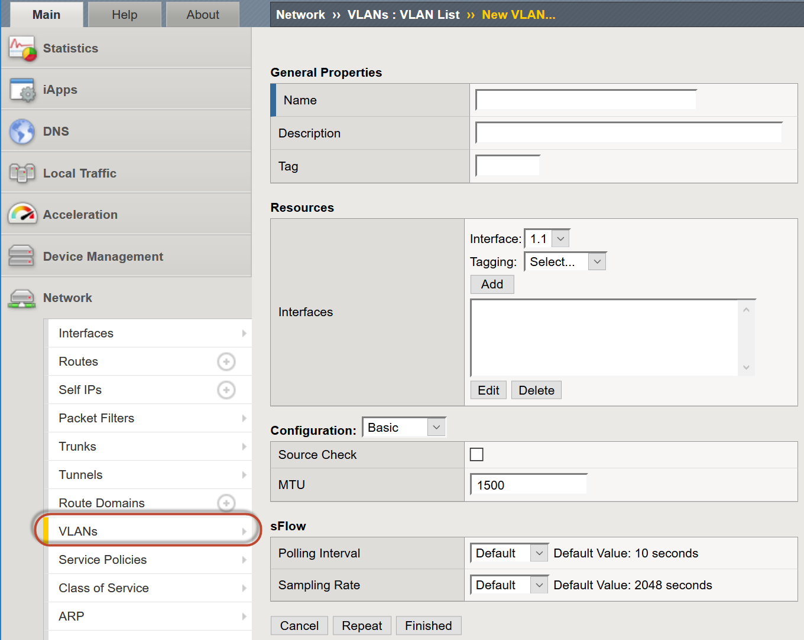
- Under General Properties:
- Name: client_vlan
- The name is for management purposes only, you could name them after
your children or pets
- Tag: <leave blank>
- Entering a tag is only required for “Tagged” (802.1q) interfaces, “Untagged” interfaces will automatically get a tag which is used for internal L2 segmentation of traffic.
- Tag: <leave blank>
- Under Resources in the Interfaces section:
- Interface: 1.1
- Tagging: Untagged
- Select the Add button. Leave all other items at the default setting.

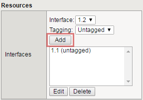
- When you have completed your VLAN configuration, hit the
- Finished button
Important
Now create another untagged VLAN named server_vlan on interface 1.2.
Assigning a Self IP addresses to your VLANs
- Go to Network > Self IPs, select Create.

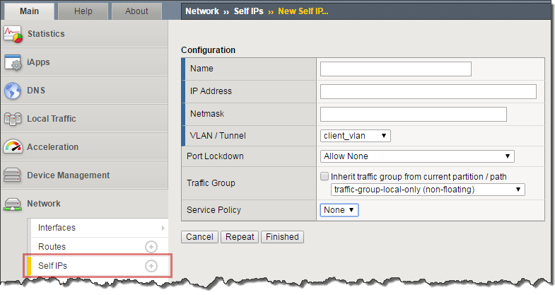
- Create a new self IP, for the server_vlan and client_vlan VLANs. In Network >> Self IPs >> New Self IP, under Configuration enter:
| Option | Server-side | Client-side |
|---|---|---|
| Name | server_ip | client_ip |
| IP Address | 10.1.20.245 | 10.1.10.245 |
| Netmask | 255.255.255.0 | 255.255.255.0 |
| VLAN | server_vlan | client_vlan |
| Port Lockdown | Allow None | Allow None |
Caution
A common mistake is to forgot to change the VLAN/Tunnel selection to the appropriate VLAN. Make sure your self IPs are in the appropriate VLAN.
- The default Port Lockdown setting of Allow None means the Self IP only responds to ICMP requests.
- The Allow Defaults selection opens the following on the self IP of the VLAN.
- TCP: ssh, domain, snmp, https
- TCP: 4353, 6699 (for F5 protocols, such as HA and iQuery)
- UDP: 520, cap, domain, f5-iquery, snmp
- PROTOCOL: ospf
- When you have completed your selfIP configuration, hit the Finished button. You should have something similar to the following:

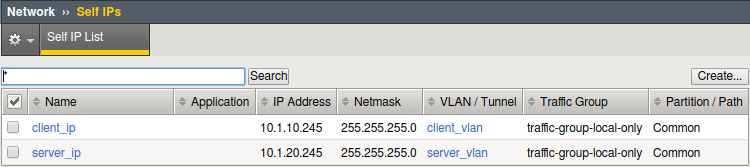
Assigning the Default Gateway
- Go to Network > Routes and then Add.
- Here is where we assign our default gateway (and other static routes as desired)

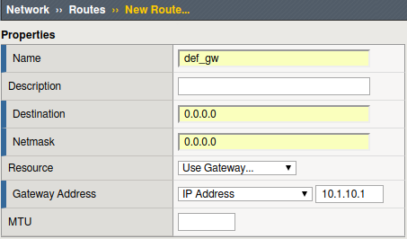
- Under Properties
- Name: def_gw
- Destination: 0.0.0.0
- Netmask: 0.0.0.0
- Resource: Use Gateway…
- Gateway Address: 10.1.10.1
- When you have completed defining your default gateway, hit the Finished button
- Verify your network configuration
- Use SSH or WebShell (UDF Only) to access your BIG-IP.
- Ping your default gateway, 10.1.10.1
- Ping a web server at 10.1.20.11.
- Use SSH or WebShell (UDF Only) to access your BIG-IP.
Creating Pools
In this lab we will build a pool and virtual server to support our web site and verify our configurations by accessing our web servers through the BIG-IP. Verification will be performed visually and through various statistical interfaces.
- From the sidebar select Local Traffic >> Pools then select Create. Here we will create our new pool

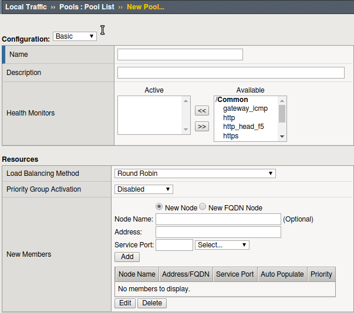
- Under Configuration:
- Name: www_pool
- The name is for management purposes only, no spaces can be used
- Description: <optional>
- Health Monitor: http
- Under Resources
- Load Balancing Method: <leave at the default Round Robin>
- Priority Group Activation: <leave at default>
- New Members:
| Address | Service Port |
|---|---|
| 10.1.20.11 | 80 |
| 10.1.20.12 | 80 |
| 10.1.20.13 | 80 |
- As you enter each IP address and port combination hit Add button
- When you have complete your pool configuration, hit the Finished button

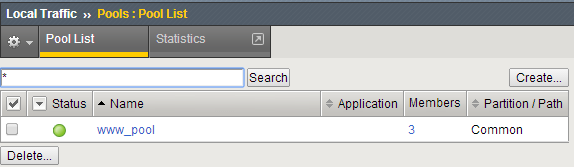
Creating Virtual Servers
Now let’s build our virtual server
- Under Local Traffic select Virtual Servers then select Create.

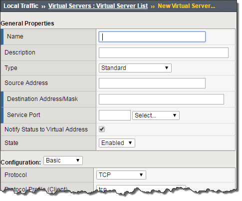
Under General Properties
Name: www_vs
Description: <optional>
Type: Standard
Source/Address: <leave blank>
Note
The default is 0.0.0.0/0, all source IP address are allowed
Destination Address/Mask: 10.1.10.100
Note
The default mask is /32
Service Port: 80 or HTTP
Under Configurations
- The web servers do not use the BIG-IP LTM as the default gateway. This means return traffic will route around the BIG-IP LTM and the TCP handshake will fail. To prevent this we can configure SNAT Automap on the Virtual Server. This will translate the client IP to the self IP of the egress VLAN and ensure the response returns to the BIG-IP.
- Source Address Translation: Auto Map

- Under Resources
- iRules: none
- Policies: none
- Default Pool: From the drop down menu, select the pool (www_pool) which you created earlier
- Default Persistence Profile: None
- Fallback Persistence Profile: None
- When you have complete your pool configuration, hit the Finished button
- You have now created a Virtual Server

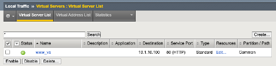
Note
Items in the GUI that are blue are links ie. shortcuts
- Now let’s see if our virtual server works!
- UDF - from the ubu-jumpbox go to http://10.1.10.100
- Open the browser to the Virtual Server you just created
- Refresh the browser screen several times (use “<ctrl>” F5)

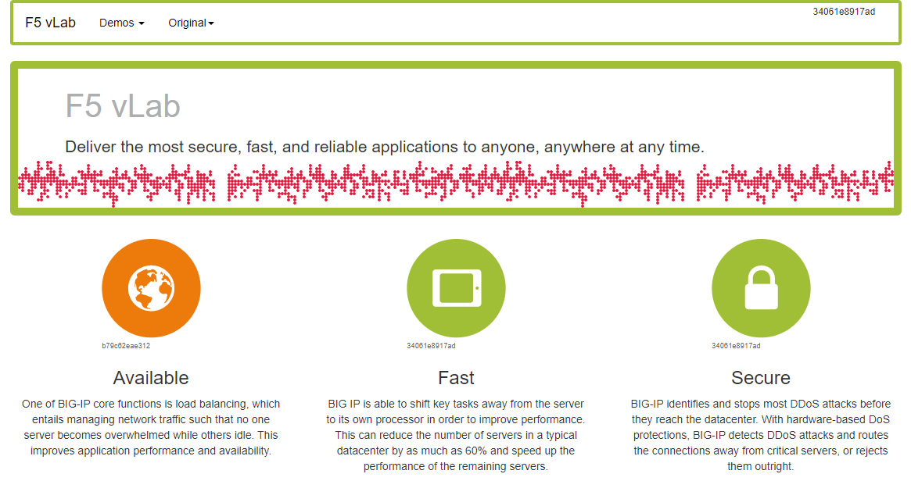
- Go to your BIG-IP and view the statistics for the www_vs virtual server and the www_pool pool and its associated members
- Go to Statistics > Module Statistics > Local Traffic
- Choose Virtual Servers from drop down

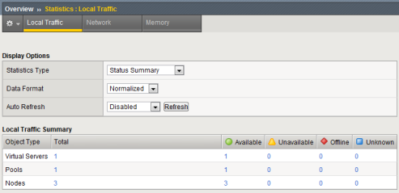
- Go to Local Traffic>Virtual Servers>Statistics
- Go to Local Traffic>Pools>Statistics
- Did each pool member receive the same number of connections?
- Did each pool member receive approximately the same number of bytes?
- Note the Source and Destination address when you go to directly and through the virtual server
- Let’s archive our configuration in case we have to fall back later.
- Go to System >> Archives and select Create.
- Name your archive lab2_the_basics_net_pool_vs
- Go to System >> Archives and select Create.
ExtraCredit!
You can also review statistics via the CLI, simply SSH to the management IP of your BIG-IP. Refer to your Student Information page and Network Diagram for the IP address.
Check out the TMSH Advanced Shell interface:
on bigip01 click on Access and then Web Shell and then Run the following TMSH commands at the config # prompt:
- tmsh run /util bash
- bigtop –n (review what is displayed on the screen)
- Type q to quit.
on bigip01 to see the Traffic Management Shell (TMOS), click on Access and then Web Shell and then type “tmsh” and press enter
Then type in the following commands at the (tmos)# prompt:
- (tmos)# show ltm pool
- (tmos)# show ltm pool detail
- show statistics from all pools
- (tmos)# show ltm virtual
- (tmos)# show ltm virtual detail
- Show statistics of all virtual servers
Check out the Dashboard!
- Go to Statistics>Dashboard

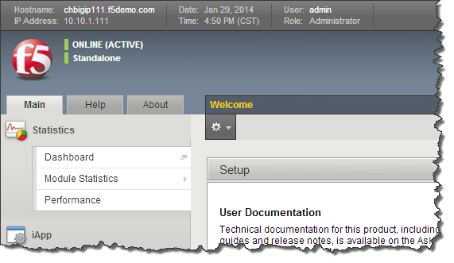
- Click the Big Red F5 ball. This will take you to the Welcome page.
Here you can find links to:
- User Documentation, Running the Setup Utility, Support, Plug-ins, SNMP MIBs